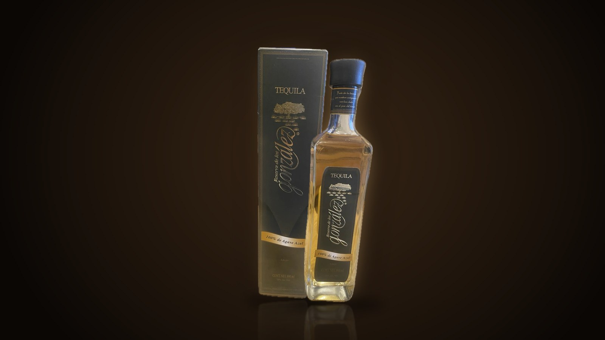
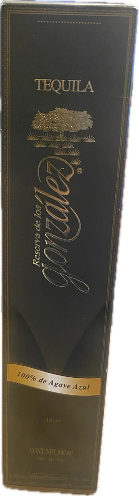

01 — HERENCIA
ドン・フリオの一族、新しい章へ
レセルバ・デ・ロス・ゴンサレスを設立したのは、ドン・フリオ・テキーラの創業者ドン・フリオ・ゴンサレスの息子、エドゥアルド・ゴンサレスとフランシスコ・ゴンサレス。一族はドン・フリオブランドを創業し、のちに売却しました。その歴史の先で、あらためて家名を冠したブランドとして伝統を継承しています。ブランドは、ハリスコ州ロス・アルトス（アトトニルコ地域）のアガベ畑へのトリビュートとして誕生しました。
お客様は20歳以上ですか？
このサイトはアルコール飲料を取り扱っています。
20歳未満の方はご覧いただけません。
申し訳ございません。20歳未満の方にはサイトをご案内できません。
100% DE AGAVE AZUL — NOM 1518, JALISCO
ドン・フリオを生んだ一族が、家名を懸けて造る、メキシコ国内限定のテキーラ。
ドン・フリオ・テキーラの創業者ドン・フリオ・ゴンサレスの息子、エドゥアルド・ゴンサレスとフランシスコ・ゴンサレスが設立した「レセルバ・デ・ロス・ゴンサレス」。一族はドン・フリオブランドの売却を経て、あらためて家名を冠したテキーラで伝統を受け継ぎます。ハリスコ州ロス・アルトス、アトトニルコのアガベ畑へのトリビュートとして生まれた、現在メキシコ国内でのみ流通する一本です。

OUR STORY
レセルバ・デ・ロス・ゴンサレスを設立したのは、ドン・フリオ・テキーラの創業者ドン・フリオ・ゴンサレスの息子、エドゥアルド・ゴンサレスとフランシスコ・ゴンサレス。一族はドン・フリオブランドを創業し、のちに売却しました。その歴史の先で、あらためて家名を冠したブランドとして伝統を継承しています。ブランドは、ハリスコ州ロス・アルトス（アトトニルコ地域）のアガベ畑へのトリビュートとして誕生しました。
原料はハリスコ州の100%ブルーアガベ。石窯（レンガ窯）でじっくりと加熱し、ローラーミルで搾汁します。仕込みには深井戸から汲み上げた水を使い、銅コイルを備えたスチルで二度蒸留。工程のひとつひとつを丁寧に積み重ねる、実直な造りです。
蒸留を終えたテキーラは、オーク樽で熟成させます。レポサドは6ヶ月、アネホは24ヶ月。エクストラアネホ・クリスタリーノは36ヶ月以上の熟成の後にろ過を施し、澄んだ液色に仕上げます。海外の愛好家の間では、加熱アガベやキャラメル、バタースコッチ、オーク、黒胡椒、蜂蜜、バニラを思わせる風味が語られています。
COLLECTION

MEMBERS ONLY
36ヶ月以上の熟成を経てろ過される「エクストラアネホ・クリスタリーノ」は、現在メキシコ国内でのみ流通しています。日本での取り扱い開始の際には、ご登録のお客様へ入荷情報をいち早くお届けします。
ご登録には20歳以上であることの確認が必要です。